14
命名视图
前端并非单页拼贴，而是由导入层和多工作区组成的完整交互壳层。
这份网页作品书严格保留大赛模板的六章结构，但展示方式改为更适合答辩的证据型叙事。所有对系统核心能力的描述均来自当前代码库：前端存在独立导入层、治理/能耗/观察/告警/智能工作区，后端存在导入与运行时、治理与控制、能耗分析、监控回放、AI Runtime、图谱、集群作业等能力域，并由运行时接入层（server-agent / SSH Linux）、SQLite 与 Neo4j 共同支撑。
前端并非单页拼贴，而是由导入层和多工作区组成的完整交互壳层。
当前作品书已纳入实际运行结果，而不是只展示结构图和模拟图。
总览、治理、能耗、观察、告警、智能构成了当前系统的主导航结构。
AI Runtime、Graph、Cluster 在代码中均以独立路由与能力集存在。
本作品面向智算中心 GPU 共享与治理场景，构建了一套“导入式边界建立 + 统一治理控制 + 历史分析复盘 + 智能扩展”的平台。它不是单纯的监控看板，也不是孤立的 GraphRAG 演示，而是从接入、治理、分析到扩展执行的完整系统。系统当前主要服务于需要对 GPU 资源做精细化导入、风险可控治理、能耗复盘和智能辅助分析的管理员、运维人员、实验室使用者与算法工程团队。
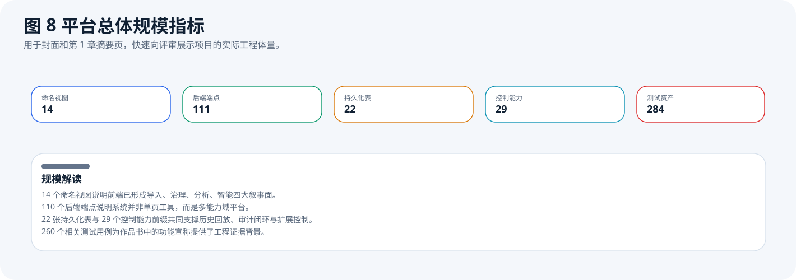
这张图用真实可统计的工程指标给出系统体量：命名视图、后端端点、持久化表、控制能力和测试资产均来自代码扫描，而不是文案估计。
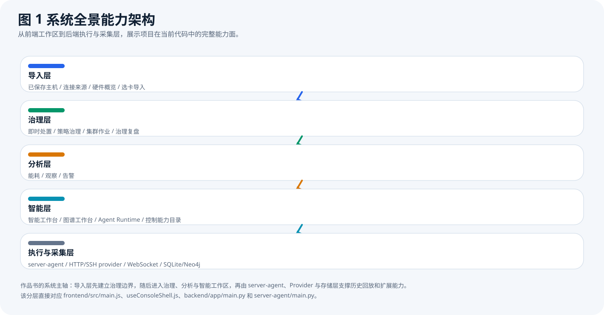
图中分层说明本作品的真实定位是“导入式 GPU 治理与智能分析平台”。评审看到这张图，就能理解为什么后续章节不是单纯围绕能耗或图谱展开。
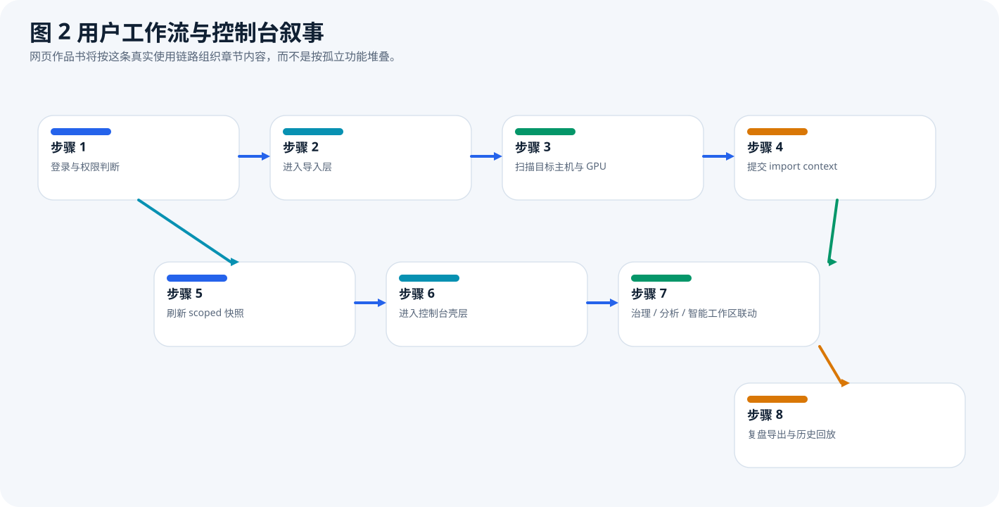
用户从登录后不会直接进入监控页，而是先进入导入层，完成扫描、选卡和 import context 提交，再进入控制台壳层的多工作区。这个顺序来自 frontend/src/main.js 与导入控制逻辑。
在 GPU 共享场景中，真正困难的问题不是“能否采集指标”，而是“谁可以管理哪些卡、危险动作是否会误伤、策略是否能和复盘链路连通、智能能力能否接在统一控制平面上”。如果系统只有监控，没有边界与命令台账，就无法支撑真实治理；如果系统只有智能问答，没有接入、权限和历史回放，也无法支撑生产级场景。
| 方案类别 | 优势 | 局限 |
|---|---|---|
| 单点监控工具 | 实时数据直观 | 通常缺少导入边界、动作审批和复盘链路 |
| 单纯控制脚本 | 动作直接 | 缺少统一工作区、历史回放和策略联动 |
| 孤立 AI / 图谱 Demo | 智能展示强 | 常与实时接入、治理闭环、集群作业脱节 |
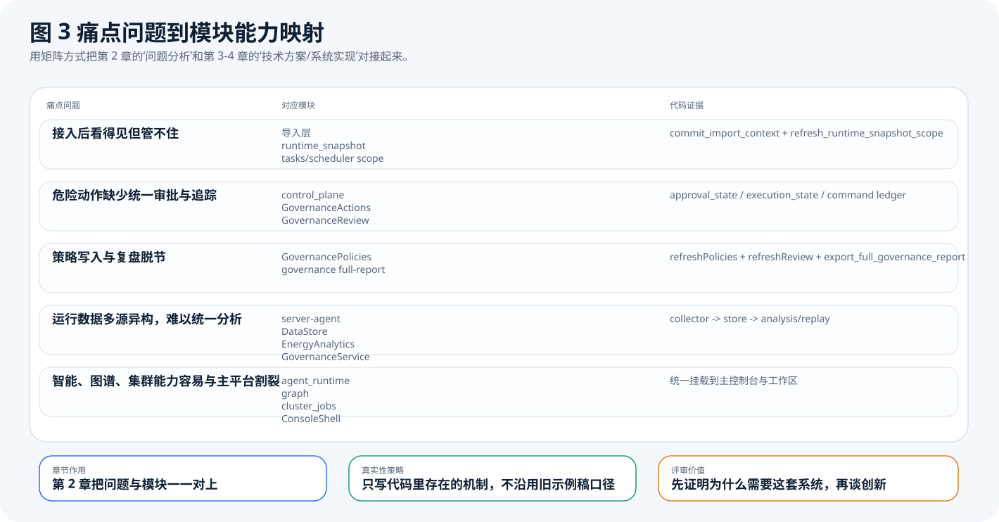
这张图把问题来源与代码中的真实模块做了一一对应。第 2 章不再泛泛谈“行业背景”，而是直接回答为什么当前代码库要有导入层、控制平面、复盘导出和扩展能力。
从代码结构看，本系统的技术路线可以概括为五步：一是通过本机 Agent、远程 Agent 或 SSH Linux 导入目标主机；二是建立 import context 并刷新 scoped 快照；三是在控制台工作区内对同一作用域进行治理、能耗、观察和告警分析；四是通过控制平面为动作、策略与集群对象提供统一能力目录；五是在统一平台上叠加 AI Runtime、Graph 和 Cluster 等扩展能力。
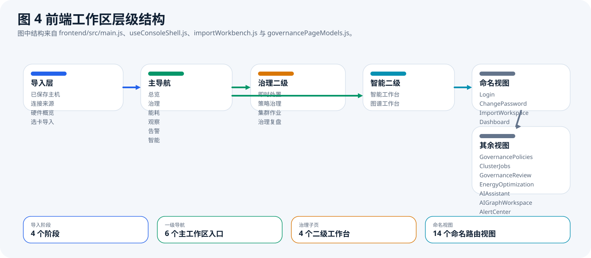
导入层、一级工作区、治理二级页和智能二级页共同构成用户可见的交互框架，证据来自 frontend/src/main.js、useConsoleShell.js、importWorkbench.js 与 governancePageModels.js。
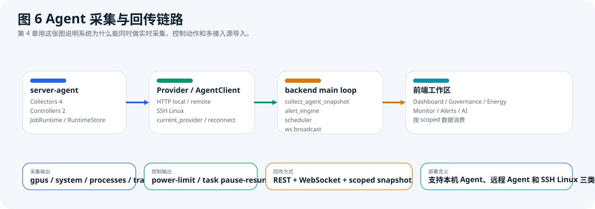
这张图说明运行时接入层并不只有一种实现。当前后端统一兼容 http_local、http_remote 与 ssh_linux 三类 Provider；server-agent 是重要接入方式之一，但 SSH Linux 也能直接进入同一导入、治理与回传链路。无论来自 Agent 还是 SSH，GPU、系统、进程与训练日志最终都会进入 import context 与 scoped snapshot，再推送到控制台页面。
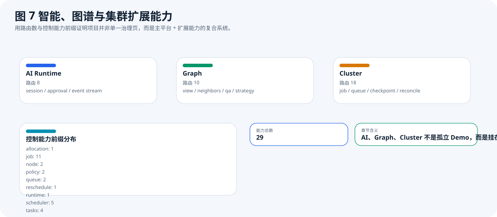
AI Runtime、Graph 和 Cluster 在代码中都拥有独立路由与能力面，不是附会在主平台上的零散组件。作品书将其写为“扩展层”，而不是主内核替代物。
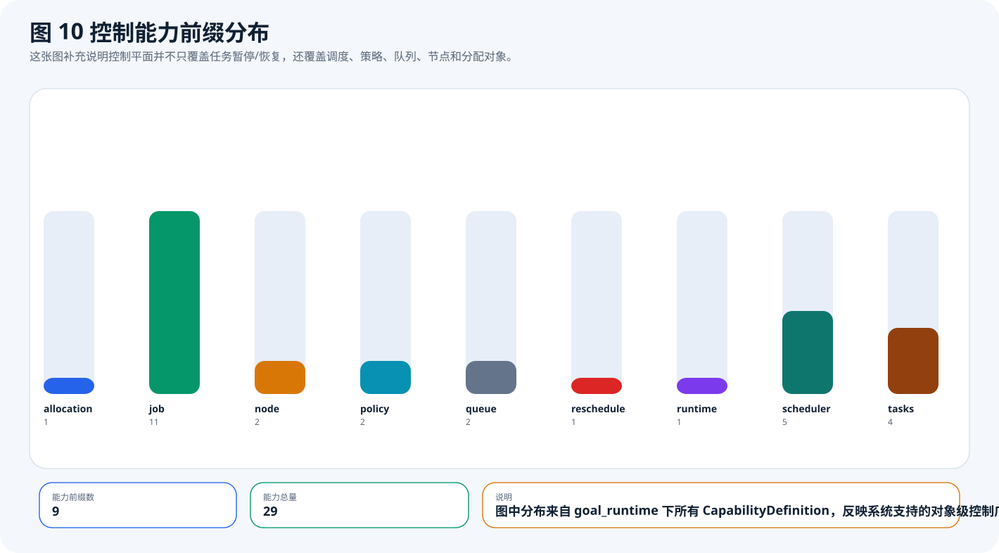
能力前缀来自 backend/app/services/goal_runtime 中的 CapabilityDefinition，说明控制平面覆盖 runtime、scheduler、tasks、policy、job、queue、node、allocation 等对象。
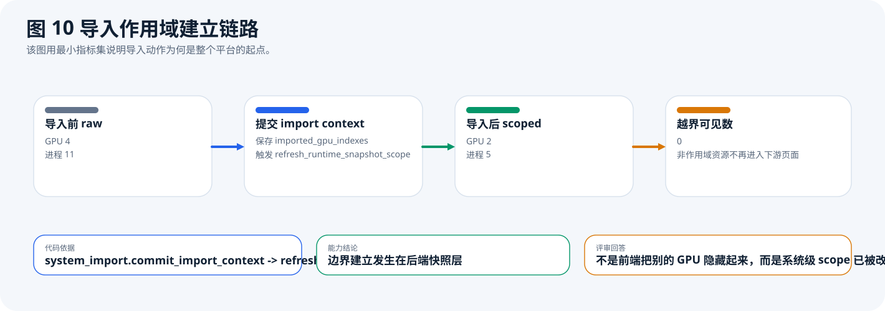
这是整个技术方案的关键。commit_import_context 提交后，会触发 refresh_runtime_snapshot_scope，因此系统不是前端临时过滤，而是把治理边界持久写入当前工作区快照。
工程实现上，前端负责导入层、控制台壳层和各工作区页面；后端负责路由注册、作用域刷新、治理与分析服务、控制平面、AI Runtime、图谱与集群服务；运行时接入层则统一兼容 http_local、http_remote 与 ssh_linux 三类 Provider，其中既可以通过 server-agent 接入，也可以直接通过 SSH Linux 采集与控制。数据方面，系统同时维护实时快照与持久历史，前者用于页面即时响应，后者用于能耗、回放、治理复盘与导出。
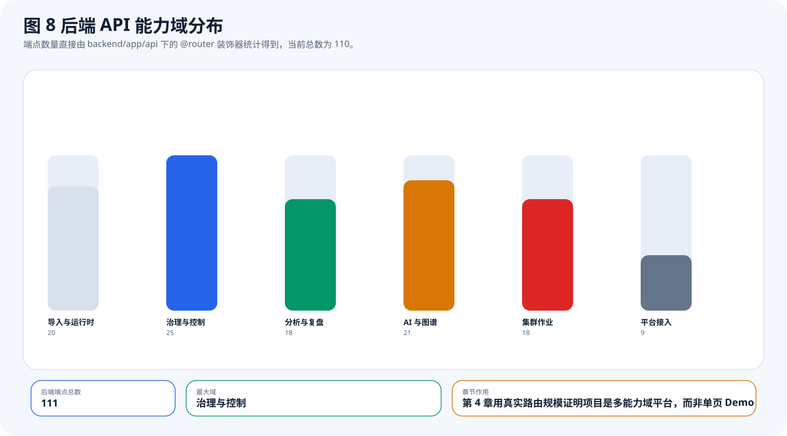
111 个端点的分布直接来自后端代码统计。该图回答了“项目是否真的是综合平台”这个问题。答案是肯定的，而且治理、分析、AI、图谱、集群都已形成独立域。
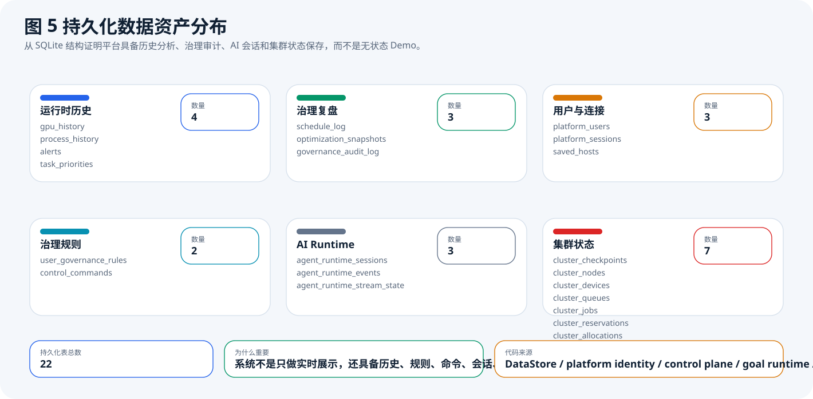
22 张持久化表来自 SQLite 支撑代码，覆盖运行时历史、治理复盘、平台身份、控制命令、AI Runtime 会话与集群状态。该图证明作品并非无状态演示。
ssh_linux 直连采集链路；GPU、系统、进程与训练日志都会先进入当前导入作用域，再供前端页面消费。gpu_history、process_history、alerts、schedule_log、optimization_snapshots 等结构化数据，用于能耗分析、告警回放与治理复盘。control_commands 命令台账，显式记录 approval_state 与 execution_state，用于审计和回查。agent_runtime_sessions、agent_runtime_events 与 agent_runtime_stream_state 独立持久化，专门用于保存会话过程、事件流与流式输出状态。http_local、http_remote 与 ssh_linux 三类 Provider。backend/app/main.py 中统一注册所有主能力路由；前端通过 /ws 实时订阅当前工作区状态，保证导入后的控制台能持续收到最新快照。ssh_linux 更适合快速接管远端 Linux 主机，两类接入方式共用后续治理与分析链路。ImportWorkspace 建立导入边界，再切入 ConsoleShell 统一壳层。| 实现环节 | 代码落点 | 对应能力 |
|---|---|---|
| 运行时接入 | build_runtime_provider()、scan_import_context() | 本机 Agent、远程 Agent 与 SSH Linux 可以进入同一平台，而不是三套孤立工具 |
| 作用域建立 | commit_import_context()、refresh_runtime_snapshot_scope() | 导入选中的 GPU 会被写入 scoped snapshot，后续页面共享同一治理边界 |
| 实时回传 | /ws、workspace snapshot | 导入后的状态变化不是停在后端内存，而是会持续推送到当前工作区页面 |
| 控制审计 | control_commands | 危险动作具备审批态、执行态和结果摘要，便于复核与追责 |
| 智能运行时 | agent_runtime_sessions、agent_runtime_events、agent_runtime_stream_state | AI 会话与控制台动作分账持久化，既能保留过程，又不污染治理审计链路 |
本章只回答一个问题：系统的集群治理动作，是否真的能改变集群状态。为此，我们把证据分成六组：实验 A 用真实远端 3090 闭环证明“功耗告警能被治理”；实验 B 用真实调度器输出的 5 类计划证明“调度决策不是单一路径”；实验 C 用调和控制器的执行/跳过两类结果证明“治理结果会回写而不是停留在按钮层”；实验 D 用当前集群控制台暴露出的对象级命令面证明“治理对象已经真正进入平台”；实验 E 把治理能力放到同机双 GPU 并发竞争场景下，验证系统能否只改变目标 GPU；实验 F 则继续验证任务治理是否能跨越单次动作，真正完成“暂停、保存进度、换卡继续执行”的检查点恢复链路。
ssh_linux 管理链路执行暂停、检查点写出与恢复，得到 10 个真实采样点，覆盖源卡运行、暂停窗口、检查点就绪与目标卡恢复四个阶段。ClusterSchedulerCore.plan_job()，构造 5 类典型治理场景，分别输出 place、wait、reject、hold、preempt_then_place。ClusterReconcileController.run_once()，构造 2 类调和结果，分别是 manual_run 和 skip_run。ClusterJobs.vue 与 clusterConsoleActions.js 提取前端已暴露的治理对象，共 4 类对象、12 项能力。| 评价维度 | 数据口径 | 判据 |
|---|---|---|
| 风险发现是否成立 | 真实功耗曲线与阈值线 | 必须先出现越阈，再出现治理动作，最后出现回落，否则不能叫治理闭环 |
| 调度决策是否分流 | 5 类计划输出 | 系统必须区分 place、wait、reject、hold、preempt_then_place，而不是只会“放置/失败”两种结果 |
| 治理结果是否回写 | controller snapshot 与 last_summary | 执行场景必须回写统计，跳过场景必须明确 skipped，不能给假成功 |
| 治理对象是否真正存在 | 当前前端命令面 | 作业、队列、节点、allocation 必须都有可操作对象与明确动作，而不是停留在后端接口 |
| 对象选择是否有效 | 双 GPU 对照实测 | 治理动作必须只命中目标 GPU；若对照 GPU 被一起治理，则不能证明系统具备针对性治理能力 |
| 任务接续是否成立 | 检查点 manifest、进度步数与双卡样本 | 恢复后的任务必须从检查点继续增长，而不能回到 0；同时源卡负载退出、目标卡负载接手必须同时成立 |
这六个判据对应的是“发现风险”“做出决策”“落地执行”“覆盖对象”“精准选中对象”“跨卡接续执行”六个层次，组合起来才能说明系统具备可答辩的集群治理能力，而不只是有若干功能入口。
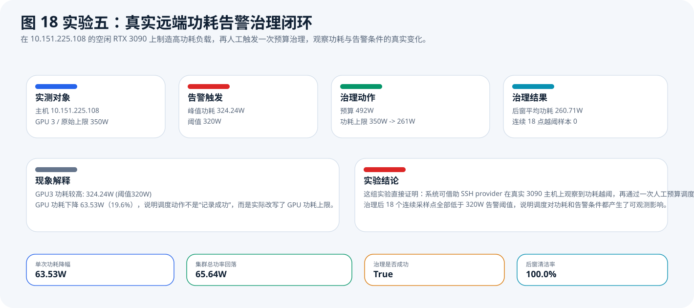
这张图的 4 个数字就是实验 A 的结论核心：324.24W 是 GPU3 在高负载下出现的真实越阈峰值，261W 是系统人工预算治理后真实写回的功耗上限，63.53W 是单卡功耗相对峰值的回落量，18/18 表示治理后整个观测窗口没有新的越阈点。它证明平台不是“看到告警”，而是“把告警条件压回阈值之下”。
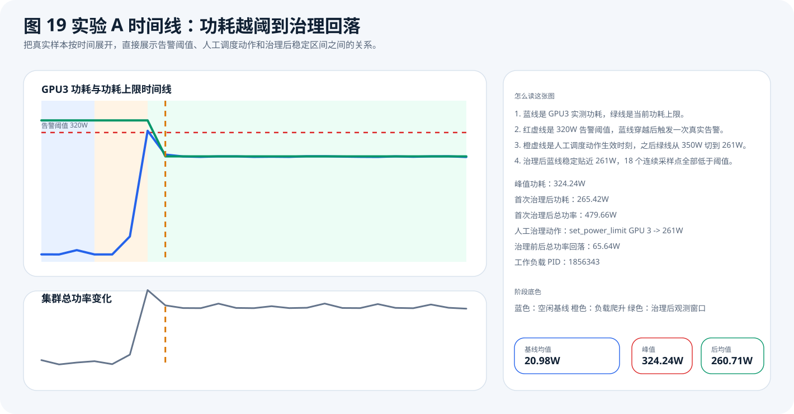
蓝线代表 GPU3 实测功耗，绿线代表功耗上限，红虚线代表 320W 告警阈值，橙线代表人工触发治理动作的时刻。图中顺序清晰可见：先越阈，再下发动作，随后功耗稳定贴近 261W。这个前后关系是治理有效性的关键证据。
实验 A 不是只取一个峰值点，而是分成三个连续阶段采样。基线窗口用于证明测试开始前 GPU3 是空闲状态，负载爬升窗口用于捕捉风险形成过程，治理后窗口用于判断治理动作是否持续生效。因此，实验 A 证明的不是“偶然把功率降了一次”，而是“系统完成了风险识别、动作下发、持续回落”三个环节。
| 阶段 | 样本数 | 平均功耗 | 峰值功耗 | 平均温度 | 越阈样本 |
|---|---|---|---|---|---|
| 空闲基线 | 4 | 20.98 W | 28.91 W | 41.25 °C | 0 |
| 负载爬升 | 3 | 135.14 W | 324.24 W | 48.67 °C | 1 |
| 治理后观测 | 18 | 260.71 W | 265.42 W | 66.39 °C | 0 |
| 治理动作 | 1 次 | 预算 492 W | 限功率 350 W → 261 W | 功耗下降 63.53 W | 后窗清洁率 100% |
最关键的现象是：峰值点出现在治理前，而 18 个治理后点全部低于阈值。这说明系统的调度动作改变了设备侧状态，而不只是让界面消失一个告警红点。
testdoc/data/real_remote_budget_experiment.json：实验摘要、告警记录、调度动作、治理结果。testdoc/data/real_remote_budget_samples.csv：25 个真实采样点的逐点数据。testdoc/data/real_remote_budget_summary.csv：给裁判快速看的阶段汇总表。testdoc/assets/book_remote_budget_experiment.svg：实验 A 摘要图，快速展示风险、动作和结果。testdoc/assets/book_remote_budget_timeline.svg：实验 A 时间线图，用于核查动作前后曲线变化。如果评审只追问“这些数是不是编的”，直接给出 CSV 即可。时间线图上的每一个点都能在 CSV 中找到对应行，真实数据和受控实验没有混写。
| 时刻 | 阶段 | GPU3 功耗 | 功耗上限 | 温度 | 利用率 | 集群总功率 | 是否越阈 |
|---|---|---|---|---|---|---|---|
| 1.05 s | baseline | 18.36 W | 350.0 W | 41 °C | 0 % | 244.69 W | 否 |
| 3.32 s | baseline | 18.34 W | 350.0 W | 41 °C | 0 % | 226.33 W | 否 |
| 5.62 s | baseline | 28.91 W | 350.0 W | 42 °C | 0 % | 234.42 W | 否 |
| 8.12 s | baseline | 18.3 W | 350.0 W | 41 °C | 0 % | 240.19 W | 否 |
| 10.55 s | load_ramp | 18.32 W | 350.0 W | 41 °C | 0 % | 227.46 W | 否 |
| 12.86 s | load_ramp | 62.87 W | 350.0 W | 46 °C | 3 % | 268.29 W | 否 |
| 15.21 s | load_ramp | 324.24 W | 350.0 W | 59 °C | 100 % | 545.3 W | 是 |
| 16.2 s | post_action | 265.42 W | 261.0 W | 58 °C | 100 % | 479.66 W | 否 |
| 18.43 s | post_action | 260.72 W | 261.0 W | 58 °C | 100 % | 468.26 W | 否 |
| 20.65 s | post_action | 259.82 W | 261.0 W | 59 °C | 100 % | 467.69 W | 否 |
| 23.16 s | post_action | 261.03 W | 261.0 W | 61 °C | 100 % | 487.18 W | 否 |
| 25.62 s | post_action | 260.96 W | 261.0 W | 62 °C | 100 % | 468.71 W | 否 |
| 27.87 s | post_action | 259.82 W | 261.0 W | 63 °C | 100 % | 467.64 W | 否 |
| 30.14 s | post_action | 260.23 W | 261.0 W | 64 °C | 100 % | 476.0 W | 否 |
| 32.36 s | post_action | 259.74 W | 261.0 W | 65 °C | 100 % | 467.95 W | 否 |
| 34.74 s | post_action | 261.29 W | 261.0 W | 66 °C | 100 % | 469.31 W | 否 |
| 37.08 s | post_action | 261.27 W | 261.0 W | 67 °C | 100 % | 487.31 W | 否 |
| 39.37 s | post_action | 260.39 W | 261.0 W | 68 °C | 100 % | 468.51 W | 否 |
| 41.67 s | post_action | 259.9 W | 261.0 W | 69 °C | 100 % | 467.95 W | 否 |
| 44.01 s | post_action | 259.56 W | 261.0 W | 70 °C | 100 % | 485.08 W | 否 |
| 46.35 s | post_action | 260.95 W | 261.0 W | 71 °C | 100 % | 468.8 W | 否 |
| 48.59 s | post_action | 260.06 W | 261.0 W | 72 °C | 100 % | 467.38 W | 否 |
| 50.88 s | post_action | 260.95 W | 261.0 W | 73 °C | 100 % | 483.31 W | 否 |
| 53.15 s | post_action | 261.1 W | 261.0 W | 74 °C | 100 % | 469.29 W | 否 |
| 55.42 s | post_action | 259.5 W | 261.0 W | 75 °C | 100 % | 465.57 W | 否 |
这 25 行就是图 19 背后的原始数据。最关键的两段是 15.21 s 的越阈点，以及之后整段 post_action 区间。前者证明风险真实发生，后者证明治理结果真实持续。
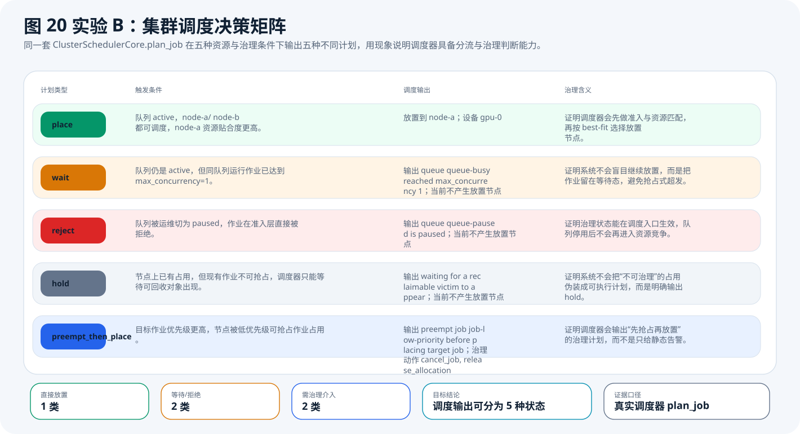
这张图不是静态分类表，而是直接使用当前 ClusterSchedulerCore.plan_job() 跑出的 5 类结果。它说明调度器能区分“可以放置”“应当等待”“必须拒绝”“暂时 hold”“先抢占再放置”这五种治理状态。
如果系统只有 place 和 fail 两种结果，就不能称为集群治理。实验 B 的价值在于，它把调度器真实区分出来的五种状态展示给评审：wait 表示队列配额已满但资源策略仍合法，reject 表示治理规则在准入层直接阻断，hold 表示系统识别出有阻塞但当前还没有可回收对象，preempt_then_place 则表示系统已经形成可执行的治理动作序列。
| 计划类型 | 触发条件 | 调度输出 | 证明能力 |
|---|---|---|---|
| place | 队列 active，node-a/ node-b 均可调度 | 选择 node-a，绑定 gpu-0 | 系统具备按资源贴合度选择节点的能力 |
| wait | 同队列运行作业已达到 max_concurrency=1 | 不放置节点，返回等待态 | 系统能在准入合法但配额已满时避免继续超发 |
| reject | 队列状态被切为 paused | 在准入层直接拒绝 | 治理规则会前置生效，而不是等资源竞争后再报错 |
| hold | 节点存在阻塞，但当前作业不可抢占 | 返回 hold，不给虚假执行方案 | 系统能识别“现在还不能动”的治理状态 |
| preempt_then_place | 高优先级作业遇到低优先级可抢占对象 | 先 cancel_job，再 release_allocation，最后放置到 node-blocked | 系统能形成真正可执行的治理动作链 |
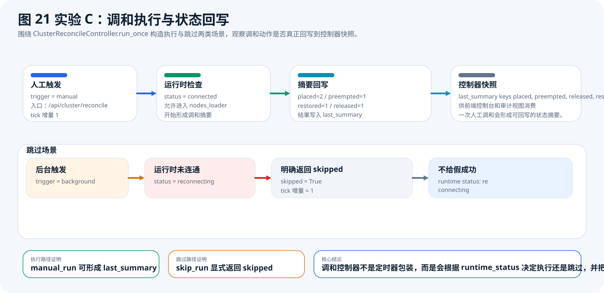
实验 C 展示的是当前 ClusterReconcileController.run_once() 的两条真实路径。manual_run 在 runtime connected 时写回 placed / preempted / restored / released 摘要；skip_run 在 runtime reconnecting 时明确返回 skipped=true 和 skip_reason，不制造假成功。
调度计划只有真正进入调和控制器并写回状态，才算形成治理闭环。实验 C 证明了两个关键点：第一，人工触发调和会把一次治理结果压缩成控制器快照中的 last_summary；第二，运行时异常或未连通时，系统不会把“没有执行”包装成“执行成功”，而是显式记录 skipped 和原因。
| 场景 | runtime_status | tick 变化 | 返回结果 | 结论 |
|---|---|---|---|---|
| manual_run | connected | +1 | placed=2、preempted=1、restored=1、released=1 | 说明调和动作确实形成了状态摘要 |
| skip_run | reconnecting | +1 | skipped=true，skip_reason=runtime status: reconnecting | 说明系统会暴露跳过原因，而不是伪造执行成功 |
评审看到“有调度器”通常还会继续追问：那它的结果如何被平台消费？实验 C 回答的正是这个问题。当前系统并不是在按钮点击后停留于“命令已发送”，而是通过控制器快照把上一次调和的触发方式、执行结果、跳过原因和统计摘要都保留下来，这样前端控制台、审计视图和复盘链路才有可信的数据基础。
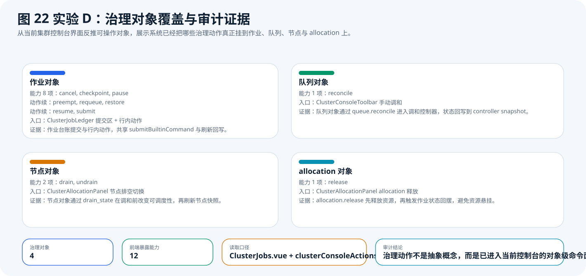
这张图从当前集群控制台反推已经真正暴露给用户的治理对象。现在不是只有“提交作业”一个动作，而是已经覆盖 job / queue / node / allocation 四类对象，其中 job 对象有 8 项动作，说明治理能力已进入对象级操作面。
实验 D 的重点不是接口数量，而是“哪些对象已经能被真正治理”。当前代码里，作业对象已经覆盖 submit、pause、resume、checkpoint、restore、cancel、requeue、preempt；队列对象覆盖 reconcile；节点对象覆盖 drain、undrain；allocation 对象覆盖 release。也就是说，治理能力已经从单一调度动作扩展为多对象协同控制。
| 治理对象 | 已暴露动作 | 当前入口 | 审计意义 |
|---|---|---|---|
| job | submit、pause、resume、checkpoint、restore、cancel、requeue、preempt | ClusterJobLedger 提交区 + 行内动作 | 说明作业治理已进入对象级命令面 |
| queue | reconcile | ClusterConsoleToolbar | 说明队列可以手动触发调和并观察摘要回写 |
| node | drain、undrain | ClusterAllocationPanel | 说明节点可调度性可以被显式治理 |
| allocation | release | ClusterAllocationPanel | 说明资源占用可以被主动释放并回摆状态 |
到实验 E 为止，本章已经证明系统有真实单卡闭环、有调度分流、有状态回写、有对象级控制面，也能在同机双 GPU 并发场景下只治理目标卡。但评审仍可能追问一个更强的问题：如果一个高负载任务需要从一张卡切换到另一张卡，系统能不能先停住它、保存进度，再让另一张卡继续执行？实验 F 就是为这个问题准备的。
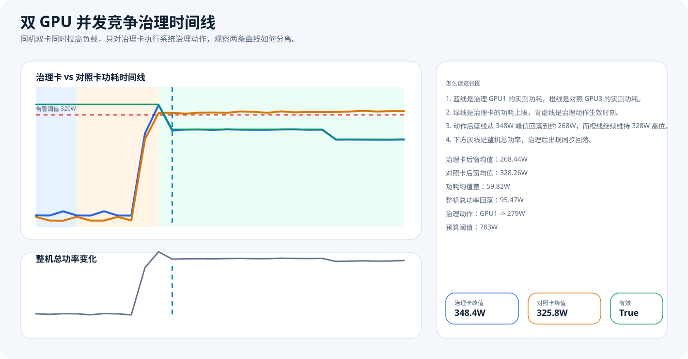
实验 E 在同一台 4×3090 主机上同时拉高 GPU1 与 GPU3，并仅通过系统预算调度对 GPU1 下发一次 set_power_limit 279W。上图横轴是采样时间、纵轴是单卡功耗；下图横轴同样是采样时间、纵轴是整机总功率。蓝线代表治理卡 GPU1，橙线代表对照卡 GPU3。治理动作之后，蓝线快速回落到 268W 左右，而橙线继续维持 328W 高位，形成同机同负载下的清晰分离。
实验 E 的意义不在于再次证明“功率可以被压低”，而在于证明系统具备针对性治理能力。两张卡在相同主机、相同时间窗、相同负载脚本下同时进入高功耗区间，但系统只对 GPU1 生成了一条预算动作，GPU3 完全保持未治理状态。也就是说，实验 E 证明的不是“整机自然波动”，而是“系统能选中目标对象并改变其状态”。
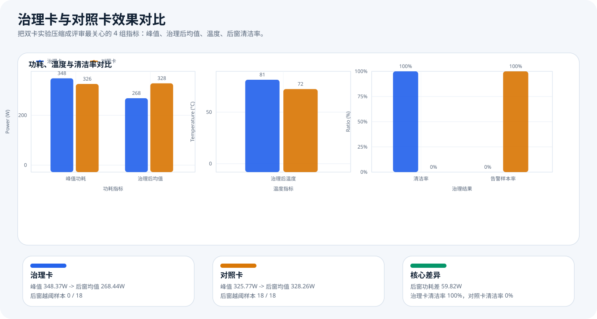
这张图把实验 E 压缩成三组标准柱状测试图：左图横轴为功耗指标、纵轴为功耗；中图横轴为温度指标、纵轴为温度；右图横轴为治理结果、纵轴为比例。治理卡峰值 348.37W，治理后均值 268.44W；对照卡峰值 325.77W，治理后均值 328.26W。两张卡在治理后窗口形成 59.82W 的平均功耗差，而且治理卡后窗清洁率 100%，对照卡为 0%。
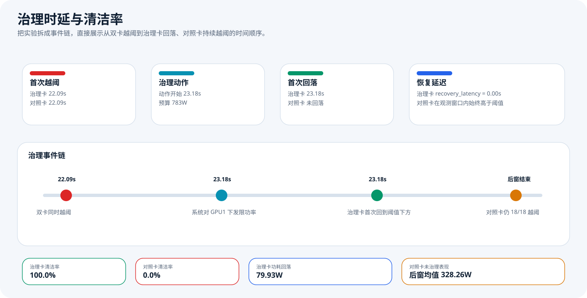
这张图把“什么时候越阈、什么时候下发动作、什么时候治理卡回到阈值以下”直接串成事件链。横轴为采样时间，纵轴把治理卡和对照卡分成两条事件轨。双卡首次越阈都发生在 22.09s，系统在 23.18s 对 GPU1 下发动作，治理卡在同一采样时刻就已经落回阈值下方，而对照卡直到观测窗口结束仍保持 18/18 越阈。
| 对象 | 阶段 | 样本数 | 平均功耗 | 峰值功耗 | 平均温度 | 越阈样本 | 清洁率 |
|---|---|---|---|---|---|---|---|
| 治理卡 GPU1 | baseline | 4 | 35.95 W | 44.91 W | 58.25 °C | 0 | 100% |
| 治理卡 GPU1 | load_ramp | 6 | 126.38 W | 348.37 W | 63.67 °C | 1 | 83.3% |
| 治理卡 GPU1 | post_action | 18 | 268.44 W | 279.13 W | 81.44 °C | 0 | 100% |
| 对照卡 GPU3 | baseline | 4 | 23.78 W | 29.42 W | 41.50 °C | 0 | 100% |
| 对照卡 GPU3 | load_ramp | 6 | 110.19 W | 325.77 W | 47.17 °C | 1 | 83.3% |
| 对照卡 GPU3 | post_action | 18 | 328.26 W | 331.77 W | 72.39 °C | 18 | 0% |
这张表最有说服力的地方在于：治理卡与对照卡在治理前都经历了越阈，但只有治理卡在后窗里完全清空越阈样本。对照卡仍然保持 18 个连续越阈点，说明实验 E 不是“整机一起回落”，而是“目标卡被系统单独治理”。
set_power_limit GPU1 -> 279W，没有对 GPU3 生成任何治理动作。testdoc/data/real_remote_dual_gpu_competition.json：完整结果，含角色分工、预算动作、时延和汇总。testdoc/data/real_remote_dual_gpu_competition_samples.csv：56 个原始样本点，逐行对应双卡时间线。testdoc/data/real_remote_dual_gpu_competition_summary.csv：按角色与阶段汇总的裁判快读表。testdoc/assets/dual_gpu_competition_timeline.svg：双卡时间线图。testdoc/assets/dual_gpu_competition_comparison.svg：治理卡与对照卡对比图。testdoc/assets/dual_gpu_competition_latency.svg：时延与清洁率图。如果评审追问“是不是把两张卡都一起限了”，直接看 JSON 中的 budget_actions 即可：该字段只包含 GPU1 的一条 set_power_limit 动作，没有任何 GPU3 动作记录。
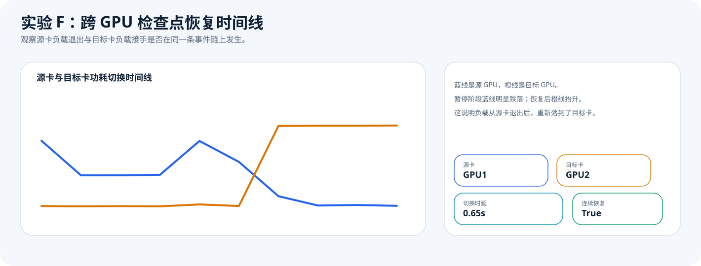
实验 F 在同一台 4×3090 主机上先把高负载任务启动在 GPU1，随后通过当前 ssh_linux 管理链路执行暂停、检查点写出，再在 GPU2 上恢复继续。上图横轴是采样时间、纵轴是两张卡的功耗；下图横轴同样是采样时间、纵轴是源卡与目标卡上的进程数。蓝线是源卡 GPU1，橙线是目标卡 GPU2。暂停阶段蓝线从运行时的 249.27W 回落到 134.92W 左右且进程仍保留；恢复后橙线抬升到 299.10W 且目标卡进程数变为 1，而蓝线回到 33-65W 空闲区间，说明负载位置发生了真实切换。
实验 F 证明的不是“暂停按钮存在”或“脚本支持恢复参数”，而是任务治理可以跨越单次动作并形成连续事件链。这组数据清楚显示：源卡任务先运行，再被冻结，接着写出 manifest，最后在目标卡上以更高的步数继续前进。也就是说，实验 F 支持的结论是“系统已经具备基于检查点的任务迁移恢复能力雏形”，而不是只会对现存进程做就地控制。
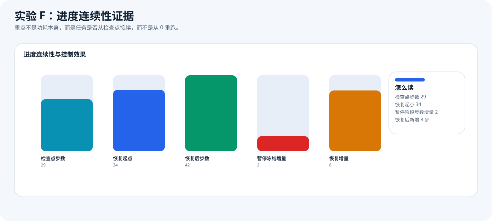
这张图专门回答评审最敏感的问题：恢复后的任务是不是从 0 重跑。左图横轴是关键事件、纵轴是 progress.json 中记录的 step；右图横轴是增量项、纵轴是对应的步数增量。实验中检查点步数为 29，恢复后第一批可见步数已经来到 34，最终增长到 42。这意味着恢复链路不是重新启动一个“同名任务”，而是沿着已有进度继续向前。
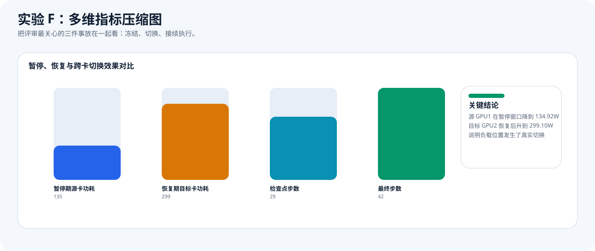
这张图把实验 F 压缩成三组标准柱状测试图：左图横轴为阶段窗口、纵轴为功耗；中图横轴为阶段窗口、纵轴为利用率；右图横轴为阶段窗口、纵轴为进程数。暂停窗口内源卡平均功耗只有 134.92W，且 3 个暂停样本的 GPU 利用率均为 0；恢复窗口内目标卡平均功耗达到 299.10W 且利用率维持 100%；从检查点 ready 到目标卡启动恢复的切换时延仅 0.65s。三者合在一起，才足以说明任务不是“停了又重开”，而是完成了真正的跨卡接续。
| 阶段 | 核心样本 | 关键数据 | 证明能力 |
|---|---|---|---|
| 源卡运行 | 1 个样本 | GPU1 功耗 249.27W，利用率 100%，进程数 1 | 说明任务最初确实落在 GPU1 上执行 |
| 暂停窗口 | 3 个样本 | GPU1 平均功耗 134.92W，利用率持续 0%，进程仍保留 1 | 说明任务被暂停而非直接退出，控制动作真实作用到了进程 |
| 检查点就绪 | manifest + 结果文件 | 检查点步数 29，manifest 记录源卡可见 GPU 为 1 | 说明系统在切卡前确实保存了可恢复进度，而不是盲目重启 |
| 目标卡恢复 | 4 个样本 | GPU2 平均功耗 299.10W，利用率持续 100%，进程数从 0 -> 1 | 说明目标卡接手了同一任务的后续执行 |
| 进度连续性 | progress.json | 恢复起点 34，最终步数 42，没有回到 0 | 说明恢复链路是接续执行，不是从头重跑 |
这张表最重要的不是某一个大数字，而是三个现象在同一条时间线上同时成立：源卡停止继续增长、检查点保存成功、目标卡接着往前跑。只要少一个环节，这个实验就不能叫“跨 GPU 恢复”。
restore_from=/tmp/aidc_ssh_job-source/artifacts/ckpt-1775895201.json 继续执行，直接把“接续”写进了运行态元数据。checkpoint -> restore 过程。testdoc/data/real_remote_checkpoint_restore_experiment.json：完整结果，含源卡/目标卡、进程状态、检查点 manifest 和恢复状态。testdoc/data/real_remote_checkpoint_restore_samples.csv：10 个原始样本点，逐行对应暂停、检查点和恢复时间线。testdoc/data/real_remote_checkpoint_restore_summary.csv：冻结增量、恢复增量、检查点步数与切换时延的裁判快读表。testdoc/assets/checkpoint_restore_timeline.svg：源卡与目标卡负载切换时间线。testdoc/assets/checkpoint_restore_progress.svg：检查点步数与恢复后步数对比图。testdoc/assets/checkpoint_restore_comparison.svg：暂停、恢复和跨卡接手的多维压缩图。如果评审追问“是不是同一个任务”，直接看 JSON 中的 checkpoint.manifest.step、restore_state_initial.step 和 restore_state_initial.restore_from 三个字段即可。它们共同证明恢复任务是沿原任务进度继续执行，而不是重新提交一个空白任务。
综合前述章节，可以将本作品概括为一个以“导入边界”为起点、以“统一控制平面”为核心、以“历史分析与复盘”为支撑、并能挂接 AI / 图谱 / 集群扩展能力的智算中心 GPU 治理平台。它既覆盖了接入与实时控制，也覆盖了历史分析与扩展能力；更重要的是，第 5 章已经用真实远端闭环、同机双卡对照和跨卡恢复三组实验，把“系统能力”从代码结构落实到了可复核现象上。
按照模板要求，本作品书需要说明大模型的使用方式。基于当前代码，可将系统中的大模型能力分成三类：第一类是强依赖 LLM 的能力，例如 AI 工作台对话、图谱草稿生成等，没有 LLM 时相关接口会直接返回未配置；第二类是可降级运行 的能力，例如 Graph 问答、Graph 策略生成，这些能力在有 LLM 时会输出更强的自然语言答案和策略建议，在无 LLM 时仍可基于规则与上下文返回 fallback 结果；第三类是可选增强 的能力，例如能耗 AI 洞察与 AI 异常分析，在无 LLM 时系统会明确返回“不可用”，不会伪造智能结论。
需要特别说明的是：本次参赛作品书把核心可信口径严格建立在代码可核查事实 + 已跑出的真实测试结果之上。也就是说，作品的主结论来自导入边界、控制平面、集群治理和真实实验 A/E/F，而不是来自大模型生成的解释文本。大模型在本系统中的定位是“增强分析与交互效率”，不是替代治理证据本身；在本次文档整理过程中，也只用于辅助结构梳理、图表脚本编写和页面排版，没有把外部对话内容直接当作系统事实写入作品书。
图表数据文件：testdoc/data/report_book_metrics.json。图表脚本：testdoc/scripts/generate_report_book_assets.py。本页面建议最终导出为 PDF 后纳入正式参赛材料。